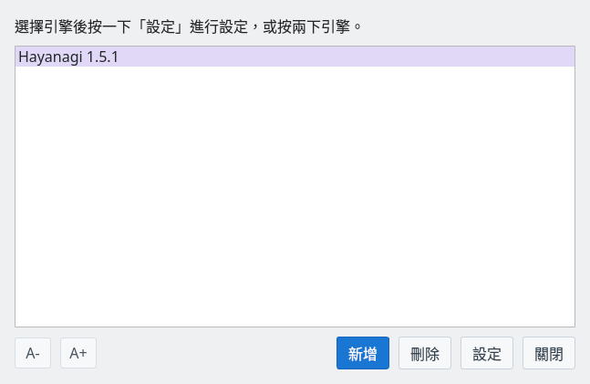
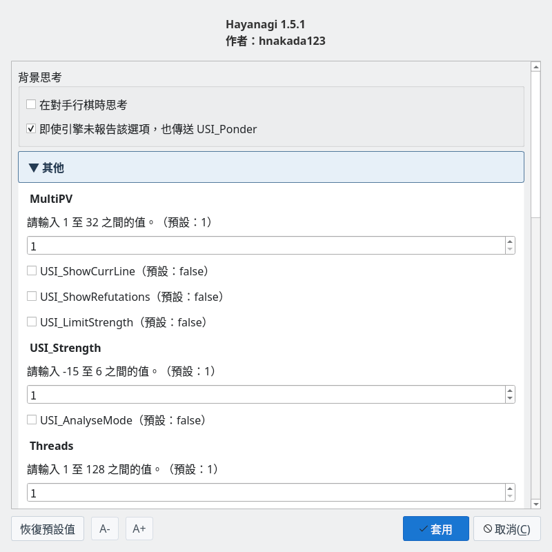

將棋引擎 Hayanagi
從對局、研究到詰棋中的守方
截圖於 Linux 上以繁體中文介面擷取。
什麼是 Hayanagi
與 ShogiBoardQ 搭配使用、以 C++17 實作的將棋引擎
Hayanagi 是支援USI 協定（將棋 GUI 與引擎交換著法與搜尋結果的協定）的將棋引擎。它作為 ShogiBoardQ 的 Git 子模組管理，以同一套原始碼建置一般對局用的執行檔與詰棋用的內建程式庫。
| 用法 | 功能與準備 |
|---|---|
| 註冊為 USI 引擎 | 可用於對局、棋譜分析、研究與詰棋搜尋。在「引擎註冊」中註冊執行檔。 |
| 在詰棋練習中內建使用 | 用於判定題目與走守方的應著。它內建於 ShogiBoardQ，無需註冊引擎。 |
原始碼與詳細規格公開於 Hayanagi 的 GitHub 儲存庫。本頁依據子模組中的 Hayanagi 1.5.1。
對局與棋力調整
支援基本時間、讀秒、加時，以及對手回合中的背景思考。可透過限制搜尋量調整棋力。
研究與棋譜分析
輸出評價值、主要變化、搜尋深度與節點數。可用 MultiPV 比較多個候選著法。
定跡與對局規則
支援 YaneuraOu 的 DB2016 格式定跡，並使用由 Floodgate 棋譜產生的獨有定跡。也能判定千日手、連續將軍的千日手、持將棋與入玉規則。
專用的詰棋搜尋
搜尋以連續將軍達成的強制將死。可處理沒有攻方王的局面，作為守方時傳回最長抵抗或解圍的應著。
在 ShogiBoardQ 中使用
一般對局與研究需要註冊 USI 引擎的執行檔
準備執行檔
Linux 版的發行 ZIP 中，可以使用解壓縮後資料夾裡的 Hayanagi/hayanagi。AppImage 版請以 --appimage-extract 解壓縮，並指定 squashfs-root/usr/bin/hayanagi。Windows 版與 macOS 版的發行套件目前未附帶 Hayanagi，請從原始碼建置。
從原始碼建置 ShogiBoardQ 時，會產生 build/Hayanagi/hayanagi。在 Windows 上檔名帶有 .exe，並可能依建置方式位於 Release 等子資料夾中。只建置 Hayanagi 時請參閱建置方法。在 Linux 與 macOS 上請選擇具有執行權限的檔案。
在引擎註冊中註冊
選擇「設定」→「引擎設定…」開啟「引擎註冊」，按一下「新增」並選擇 Hayanagi 的執行檔。清單中顯示「Hayanagi 1.5.1」即完成註冊。

引擎註冊：清單中顯示「Hayanagi 1.5.1」
按一下「設定」（或按兩下引擎）開啟引擎設定，可以變更執行緒數、棋力等。附截圖的操作說明請參閱引擎註冊指南。
主要引擎設定
可依用途調整已註冊 USI 引擎的設定

引擎設定：可變更「背景思考」以及 Hayanagi 回報的選項值
| 選項 | 內容 |
|---|---|
Threads | 搜尋使用的執行緒數。預設值為 1，範圍為 1～128。請依電腦的 CPU 與其他工作設定。 |
Hash / USI_Hash | 一般搜尋中記憶局面的記憶體量（MB）。兩者設定的是同一個表，預設值為 16 MB。 |
MultiPV | 輸出的候選著法數。引擎支援 1～32。ShogiBoardQ 的研究中使用「候選著法」的設定。 |
USI_Ponder | 對手回合中的背景思考。預設關閉。在引擎設定的「背景思考」中，以「在對手行棋時思考」切換。 |
USI_LimitStrengthUSI_Strength | 啟用棋力限制後，以 -15～6 的值限制搜尋深度與節點數。負數大致對應級位，正數對應段位，0 視為 1 級。預設不限制棋力。 |
USI_AnalyseMode | 分析用模式。會停用棋力限制、依定跡立即應答、自動認輸與背景思考要求。不限時搜尋需另行指定。 |
USI_OwnBookBookDir / BookFile | 指定是否使用定跡以及讀取哪個檔案。預設啟用，讀取執行檔所在位置的 book/hayanagi_book.db（將 BookFile 設為 no_book 即不使用定跡）。從原始碼建置時，定跡檔案會放到建置目錄中。發行套件未附帶定跡，此時引擎不使用定跡，僅靠搜尋走棋。 |
EnteringKingRule | 引擎自己進行入玉宣言的標準。可選擇 24 點法、27 點法、試玉規則等，預設值為 CSARule24。宣言是否成立由 ShogiBoardQ 對局對話方塊中「持將棋」選擇的規則判定。 |
棋力設定的段級位是經對局校準前的參考值，不保證與人類的段級位一致。Hayanagi 是使用簡易評價函數的最小構成引擎，評估子力得失、棋子活躍度與王的安全度等。
此設定表適用於已註冊的 USI 引擎。詰棋練習的內建判定使用題目清單的「詰棋引擎」「搜尋時間」，以及練習畫面的「搜尋時間」。
詰棋搜尋與詰棋練習
區分將死、不詰與未判定，並調查攻方與守方的著法
| 用途 | 動作 |
|---|---|
| 詰棋搜尋（英文） | 透過標準 USI 的 go mate 請已註冊的 Hayanagi 搜尋。找到將死時，傳回包括守方最長抵抗在內的全部手順。 |
| 詰棋練習（英文） | 由內建 Hayanagi 判定題目，並針對使用者的將軍走守方的應著。錯過將死時會顯示解圍的著法。 |
| 詰棋局面生成器（英文） | 由內建 Hayanagi 預先篩選候選局面。也可以選擇已註冊的 Hayanagi 作為確認將死的 USI 引擎。 |
標準 USI go mate 的搜尋上限為 63 手，ShogiBoardQ 詰棋練習中進行的內建初始局面判定最多 31 手。逾時與達到搜尋上限會與「證明不詰」區分處理。
由於是深度優先搜尋，長手數的詰棋（大約 15 手以上）可能需要較長時間。長手數的題目可以在題目清單的「詰棋引擎」（英文）中選擇另行註冊的 KomoringHeights（已註冊時，首次開啟會選擇 KomoringHeights）。此時守方的應著仍由 Hayanagi 走，並依 KomoringHeights 的將死手數選擇應著。
從原始碼建置
可以與 ShogiBoardQ 一起建置，也可以只建置 Hayanagi
與 ShogiBoardQ 一起建置
在 ShogiBoardQ 儲存庫的根目錄執行。取得子模組後照常建置，即可產生應用程式與 Hayanagi。
git submodule update --init --recursive
cmake -B build -S . -DCMAKE_BUILD_TYPE=Release
cmake --build build --config ReleaseQt 等準備請參閱從原始碼建置中各作業系統的步驟。在 Linux 與 macOS 的一般設定中，註冊引擎時使用 build/Hayanagi/hayanagi。定跡檔案放在 build/Hayanagi/book/hayanagi_book.db。
只建置 Hayanagi
取得子模組後，在 ShogiBoardQ 儲存庫的根目錄執行以下指令。Hayanagi 本身不依賴 Qt，需要 CMake 3.16 以上與支援 C++17 的編譯器。
cmake -S Hayanagi -B build-hayanagi -DCMAKE_BUILD_TYPE=Release
cmake --build build-hayanagi --config Release
./build-hayanagi/hayanagi --version最後一條指令是 Linux 與 macOS 的範例，會顯示 Hayanagi 1.5.1。在 Windows 上請執行輸出目錄中的 hayanagi.exe。USI 指令、搜尋原理、測試與更新記錄的詳細內容請參閱 Hayanagi 的 README（日文）。